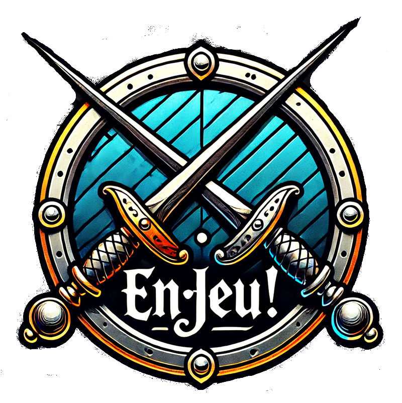

Grimoire Arcanique
Modificateur INT :
0
Niveau Incantateur :
1
Bonus Chance :
0
Sorts Niveau 1
Sorts Niveau 2
Sorts Niveau 3
Sorts Niveau 4
Sorts Niveau 5
📖 Gérer mes sorts et mon mage
🔥 Réinitialiser

✕
Lancer un Sort
Brûlesort :
Bonus magique :
Incanter
Préparez votre incantation et invoquez les forces arcanes...